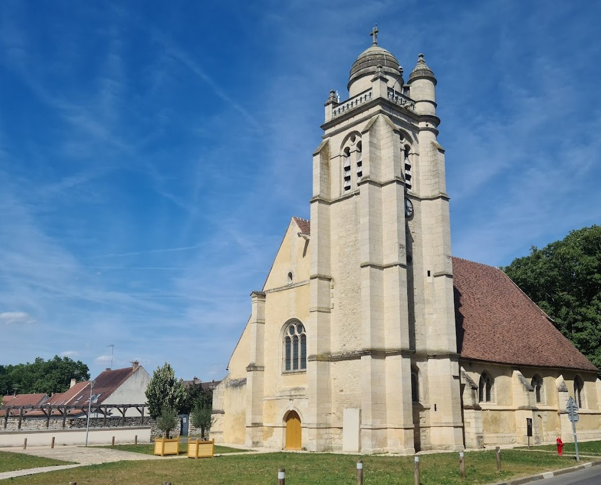

Alexandra & Guillaume
6 septembre 2025
Le Jour J
16h00 : Messe de Mariage
Église Trinité de La Chapelle-en-Serval
Nous sommes en train de faire les démarches auprès de la Mairie de la Chapelle-en-Serval pour pouvoir utiliser le grand parking municipal, accessible par l'Allée Saint Georges.
Pour aller de l'église au château...
L'église et le château sont très proches, à moins de 10 minutes en voiture
Le parking sera fléché dès l’entrée de la propriété.
Réception au château de Pontarmé
Château de Pontarmé
Nous vous attendons ensuite de pied ferme au Château de Pontarmé dès 17h30 pour le traditionnel tryptique cocktail, dîner et fête mémorable jusqu'au bout de la nuit !